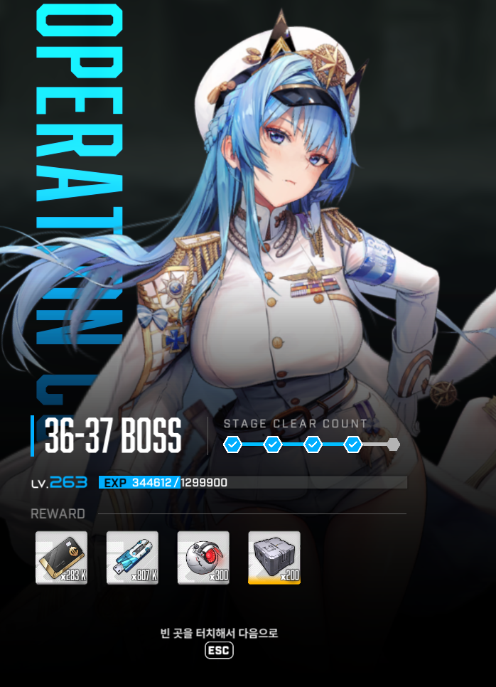
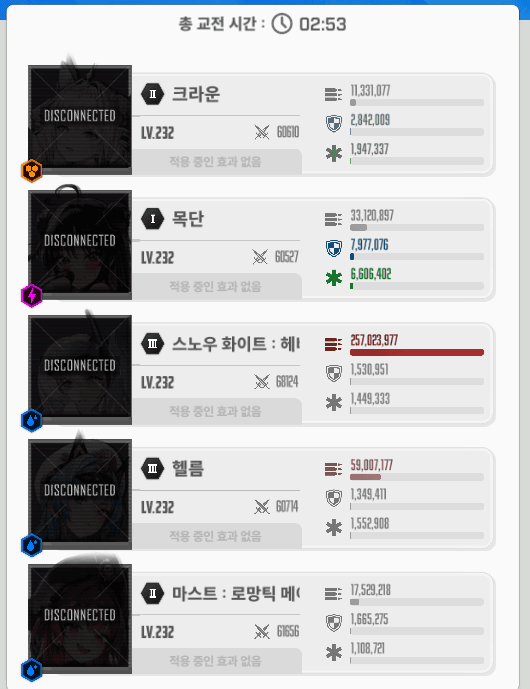

진짜 많은 일이 있었음.........
아직 검뱀 못 깬 뉴비들을 위해 짤막한 공략 쓰자면 (투력 낮았을 때 기준임 32만 이상이면 볼 필요없음)
1. 처음에 시작하자마자 구슬날릴때 목단쪽으로 날라가면 리트
첫 버스트는 잘 보다가 54초로 바뀌는 순간 켬 이유는 46초 32초에 레이저 날라오는데 이거 엄폐안하고 몸으로 맞을거임(엄폐물 지키기 위해서)
너무빨리켜면? 목단 받뎀감 풀리고 맞으면 그냥 목/단 됨
2. 웬만하면 스화 잡고 컨하는거 추천 바로바로 쏘는게 1~2발이라도 더 쏠 수 있음
3. 크라운 도발 타이밍 분신 튀어나오는거 들어가기전에 19장전해놓고 크라운도발이 켜지면 분신을 팬다 이것만 생각
크라운 도발 아닐때 분신패면? 목/단 됨
첫분신 죽일때 풀버스트 시간 2.4초 남았을때 목단 엄폐하고 있다가 풀버스트 꺼지면 고개 내밀어서 버충
타이밍이 정확하진 않을 수 있으나 대충 이때 맞음 미리 엄폐하거나 늦게 엄폐하면 엄폐물과 함께 목/단 됨
버스트 순서는 마헬 -> 크스 -> 마헬 -> 크스 -> 크헬 -> 마스 -> 크헬 -> 크스 -> 마헬
4. 아 그리고 족자저지 들어가기전에 반드시 5번째 버스트인 크헬을 쓰고 들어가야함 그리고 칼저지하삼
다들 고생하삼...